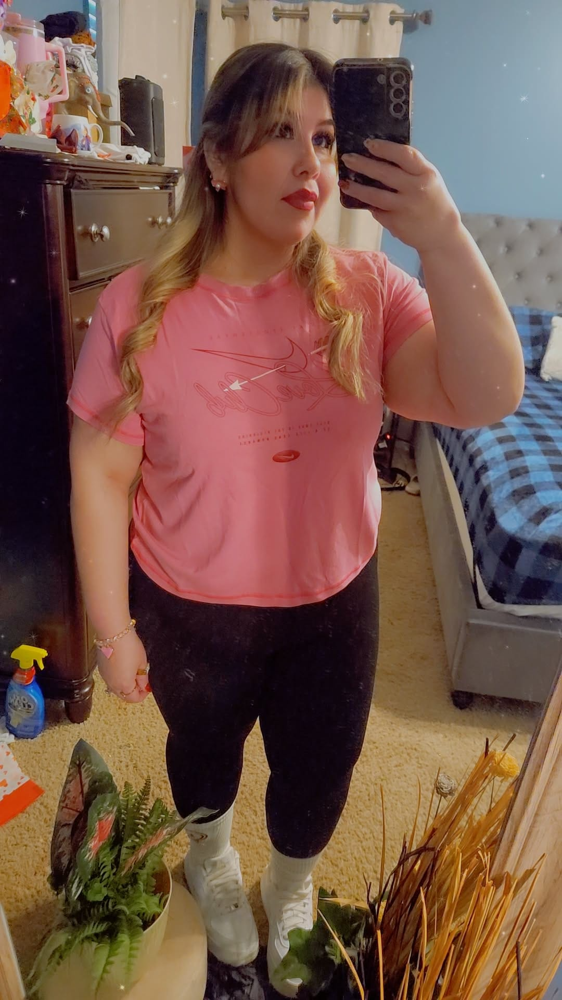

About Yesi
Yesenia Palma is currently 35 years old. She was born October 30, 1990, and a very proud Scorpio. She is a mother to four kids, ages 17, 15, 9, and 6. She spends her time creating DYI projects, going on walks, cooking and decorating. She has been married for almost 10 years, and when asked, says the key is to learn patience. Through the obstacles life throws at you, love can only take you so far, what helps you to keep going is patience and communicating with your partner. Yesi’s current goals is to get a mom car to have more space for the family and build a fun savings account.
One of the hardest obstacles she had to go through was being let go of her job. She worked at Chipotle for 11 years and was let go on technicality. It was really rough, but thankfully she eventually got a new job. She currently works at a chiropractor clinic and loves everything about it. Less stress, no attitudes and now has much more time to spend with her husband and kids.
One of her biggest obstacles was being medically diagnosed with a condition making it hard to lose weight. After losing her job, her body image made her even more depressed with her current life. She hated seeing herself in the mirror and uncomfortable changing even in front of her husband. So she finally did something about it. She had a gastric sleeve surgery done and has focused on her health journey. It’s been a year, and she went from almost 300 lbs and size 22 jeans to currently size 12-14 jeans. She focused on her eating habits and now loves watching herself in the mirror and feels good in her own skin. She still has a goal weight that would be considered healthy for her age and height, but knows that it takes patience to lose weight in a healthy way, and enjoying the journey.


